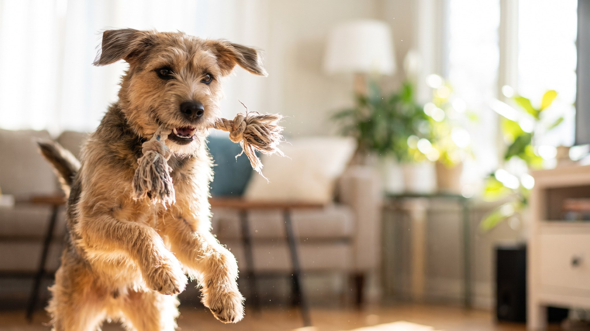

Игровая сессия работает лучше, когда у неё есть начало, короткие серии и понятный финал. Кошке нужен доступ к движущейся добыче с возможностью поймать её, собаке подходят правила обмена и паузы по команде. Ниже отдельно описаны занятия для каждого питомца, наблюдаемые признаки усталости и порядок завершения.
🐾 У вашего питомца так же?
Расскажите в AnimaLife, как ведёт себя ваш питомец, — приложение объяснит причину и даст пошаговый план. Бесплатно, без записи к специалисту.
Разобрать свой случай → Разобрать в MAX →
У вас iPhone? AnimaLife есть в App Store
Выберите одну игрушку, уберите лишние предметы с пола и освободите место для остановки. Для первого ориентира возьмите серию на 3–5 минут, затем посмотрите на поведение питомца. Молодое животное может просить продолжения даже после признаков утомления, поэтому запрос игры сам по себе не показывает подходящую длительность.
Начинайте со спокойного приглашения: покажите игрушку и дайте ей появиться в поле зрения. В середине сделайте паузу ещё до потери внимания. После неё предложите одну повторную серию либо завершите занятие. Пауза входит в игру заранее. Тогда вам не придётся останавливать питомца на пике возбуждения.
Если кошка и собака живут вместе, занимайтесь с ними по очереди. Второе животное оставьте за закрытой дверью или в отдельной зоне со спокойным занятием. Общая игрушка провоцирует конкуренцию и мешает заметить индивидуальные признаки усталости.
С кошкой двигайте удочку низко над полом, затем убирайте приманку за коробку или под край ткани. Дайте ей сократить дистанцию и несколько раз поймать игрушку лапами. После поимки выдержите секунду и продолжите движение. Постоянное ускользание без успеха снижает интерес или поддерживает чрезмерное возбуждение. Руки и ноги не используйте как добычу.
С собакой выберите перетягивание мягкой игрушки, поиск спрятанного предмета или принос с обменом. До броска попросите знакомую команду, после приноса предложите лакомство за отдачу. При перетягивании сохраняйте движения в одной плоскости и останавливайте игрушку на паузе. Пёс учится отпускать предмет и ждать следующего приглашения.
Оба занятия стройте вокруг действий, которые питомец уже умеет. Новую сложную задачу добавляйте в спокойном состоянии. Если собака хватает рукава вместо игрушки или кошка переносит охоту на ваши пальцы, прекратите движение и верните подходящий предмет в поле внимания.
На паузе уберите игрушку без резкого выдёргивания. Не подбадривайте и не предлагайте новую игру. Дайте доступ к воде и спокойно займитесь обычными делами. Если внимание вернулось, можно повторить короткую серию. При сохраняющемся безразличии завершите занятие.
Последнюю серию сделайте проще предыдущих. Кошке позвольте поймать приманку и удержать её несколько секунд, затем спрячьте удочку. С собакой закончите обменом игрушки на лакомство и попросите знакомую спокойную команду. После этого предложите воду, место для отдыха или обычное кормление по режиму.
Часто владелец внезапно забирает предмет на самом активном движении и сразу уходит. В других случаях игру продолжают до полного отказа от игрушки. Ошибкой будет и смена занятий одного за другим, когда питомец уже отвлекается. Финал возвращает обычный домашний ритм. Через несколько минут животное должно получить возможность лечь без новых приглашений играть.
Материал носит информационный характер и не заменяет очную консультацию ветеринара.
🐾 Хотите понять, что питомец говорит вам?
Опишите ситуацию или пришлите видео в AnimaLife — AI разберёт поведение вашего питомца и подскажет, что делать. Бесплатно, ответ за минуту.
Разобрать поведение → Разобрать в MAX →
У вас iPhone? AnimaLife есть в App Store
🐾 Понравился разбор?
Подпишитесь на канал — каждый день разбираем по одному тревожному симптому у кошек и собак: что в пределах нормы, а когда пора к врачу. Подпишитесь, чтобы не пропустить разбор, который может спасти здоровье вашего питомца.